search
search
search
search
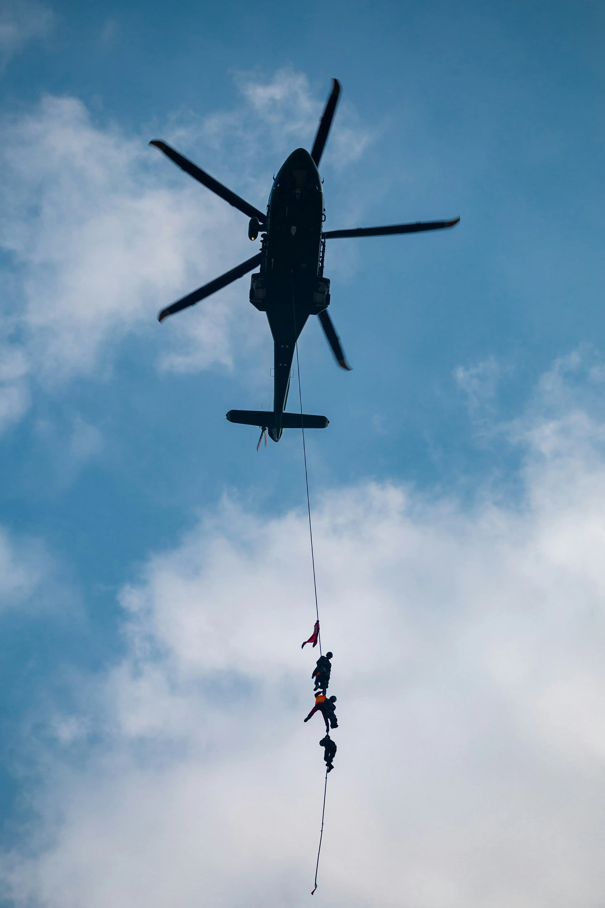
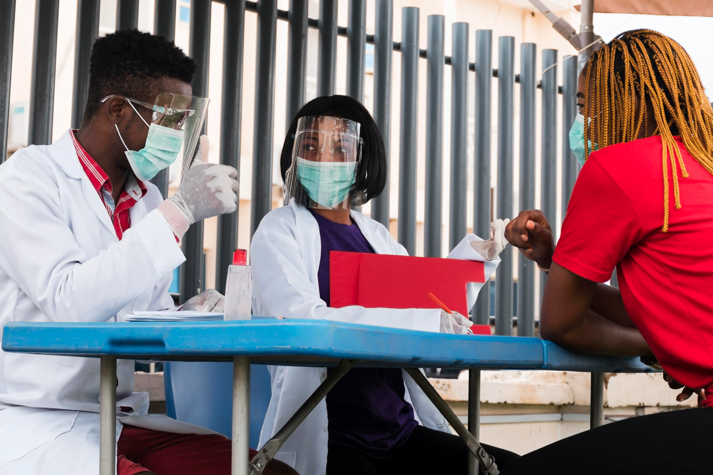
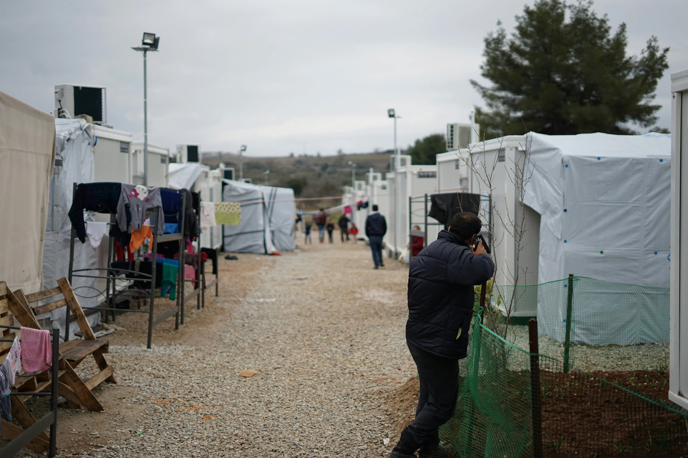
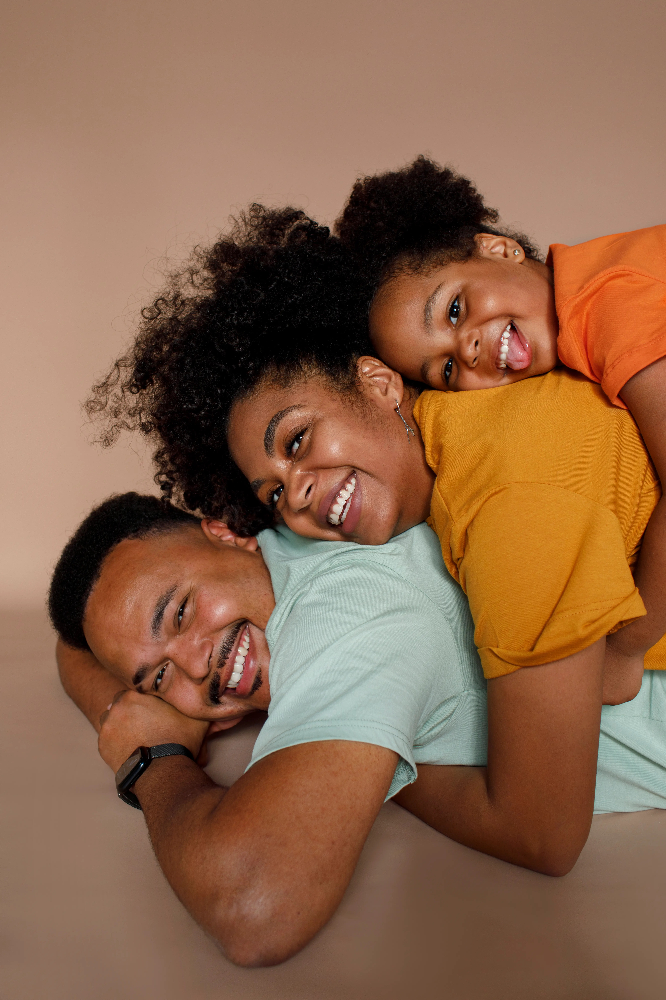
Organizations: ILO, Federal Government of Nigeria
Focus Areas: Employment policy, labour markets, skills systems, institutional reform
Role: Principal Consultant / Lead Policy Expert
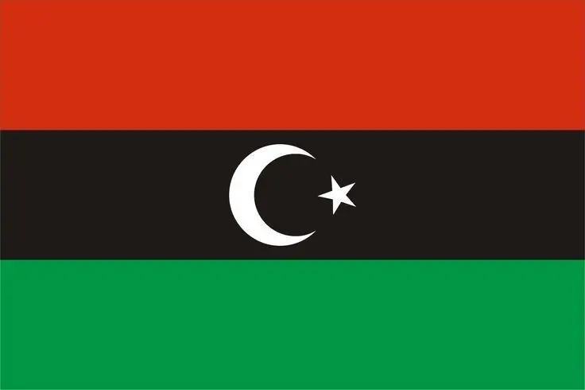
Organizations: UNDP
Focus Areas: Post-conflict recovery, livelihoods, employment
Role: Lead / Senior Technical Expert
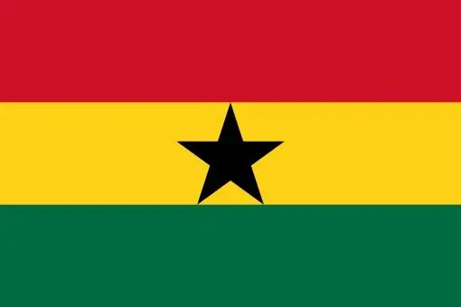
Organizations: UNDP, Development partners
Focus Areas: Employment, livelihoods
Role: Research Contributor

Organizations: UNDP, ILO
Focus Areas: Decent work, employment creation, labour standards
Role: Lead Consultant / Lead Author

Organizations: UNDP
Focus Areas: Livelihood recovery, employment
Role: Technical Specialist

Organizations: UNDP, Development partners
Focus Areas: Decent work, employment creation, labour standards
Role: Lead Consultant / Lead Author
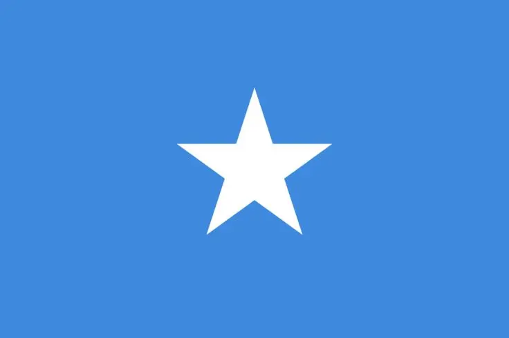
Organizations: ILO
Focus Areas: Employment policy in fragile contexts
Role: Principal / Lead Consultant
Organizations: United Nations system, academic networks
Focus Areas: Global policy coordination, research leadership
Role: Senior Policy Strategist / Research-Practitioner
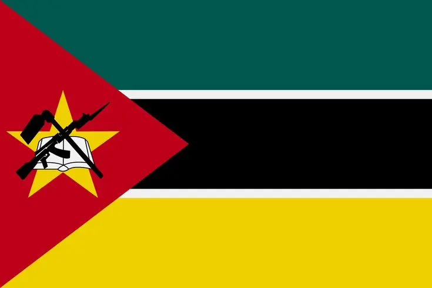
Organizations: UNDP / partners
Focus Areas: Livelihoods, resilience
Role: Research Contributor
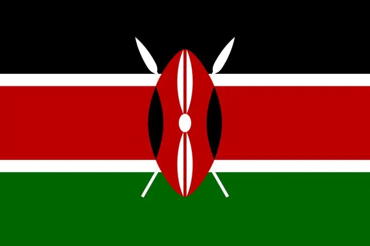
Organizations: UNDP / partners
Focus Areas: Employment, livelihoods
Role: Research Contributor

Organizations: UNDP / research partners
Focus Areas: Employment policy
Role: Research Contributor
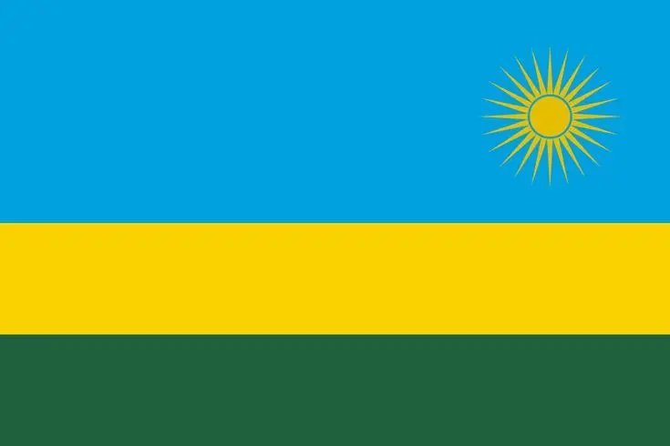
Organizations: Development partners
Focus Areas: Employment, development policy
Role: Research Contributor
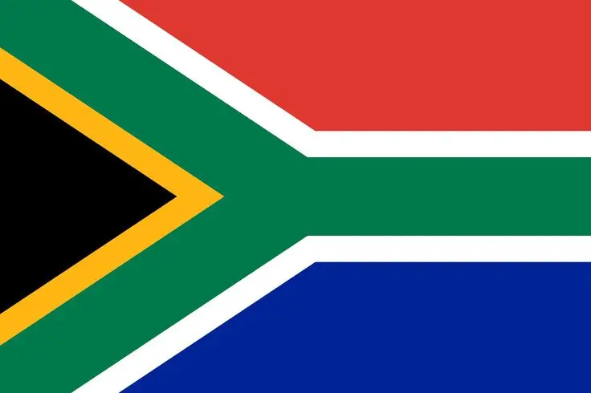
Organizations: Academic / research institutions
Focus Areas: Labour markets, development policy
Role: Research Contributor

Organizations: Development partners
Focus Areas: Rural livelihoods
Role: Research Contributor
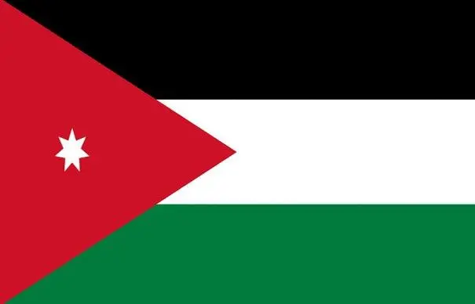
Organizations: UNDP
Focus Areas: Refugees, labour markets, host communities
Role: Policy Analyst / Research Contributor

Organizations: UNDP
Focus Areas: Comparative development, labour systems
Role: Researcher
Organizations: Labour systems, development policy
Focus Areas: Employment policy
Role: Research Contributor
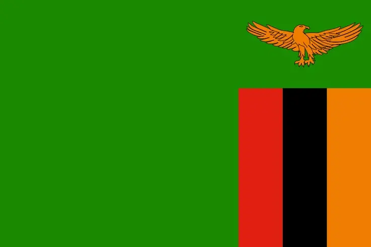
Organizations: Development partners
Focus Areas: Livelihoods
Role: Research Contributor
Organizations: UNDP / partners
Focus Areas: Refugees, labour integration
Role: Policy Analyst
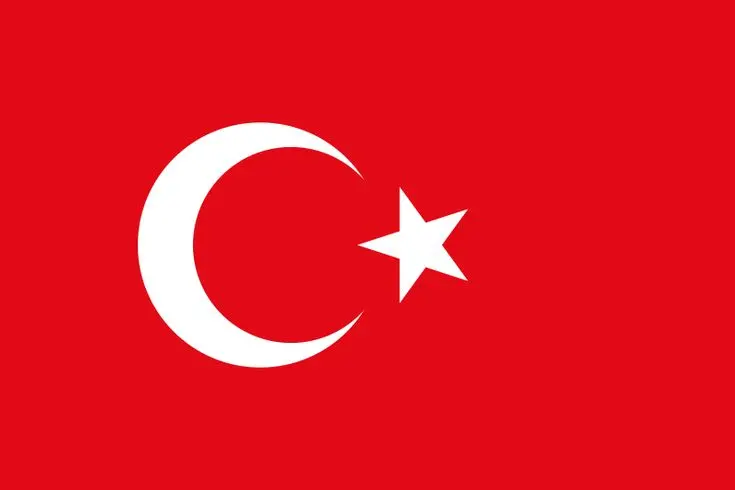
Organizations: UNDP / research networks
Focus Areas: Migration, labour markets
Role: Research Contributor
Drafted a Risk Matrix on Cash Transfers for UNDP Ebola Response for Adaptation in the COVID-19 Pandemic
A Systematic Review of UNDP's 3x6 Approach in Post-Crisis Communities within the Context of COVID-19 Pandemic (A Report)
Report on Recovery: Helping Small Enterprises Get Back to Business COVID-19 Crisis Response
UNDP Global Tool on the 3x6 Approach (Revised Draft, November 2020)
Value Chains and Emergency Employment for COVID-19 Recovery
Private Sector Engagements in Migration Processes: A Mapping Guide
A Systematic Review of UNDP’s 3x6 Approach in Post-Crisis Communities Within the Context Of COVID-19 Pandemic
A Project Proposal for Managing and Preventing Future Ebola Virus Disease (EVD) Outbreaks
West Africa Digital Financial Inclusion Programme for the Fragile States: A Review
The Cost of Sustaining Syrian Refugees in Europe And People Displaced in Syria: A Comparative Analysis.
Rural Livelihood Recovery from the Ebola Outbreak: The Unfinished Business (UNDP Blog).
Engaged in the following Projects for the Adolescent Development and Participation (ADAP) Unit:
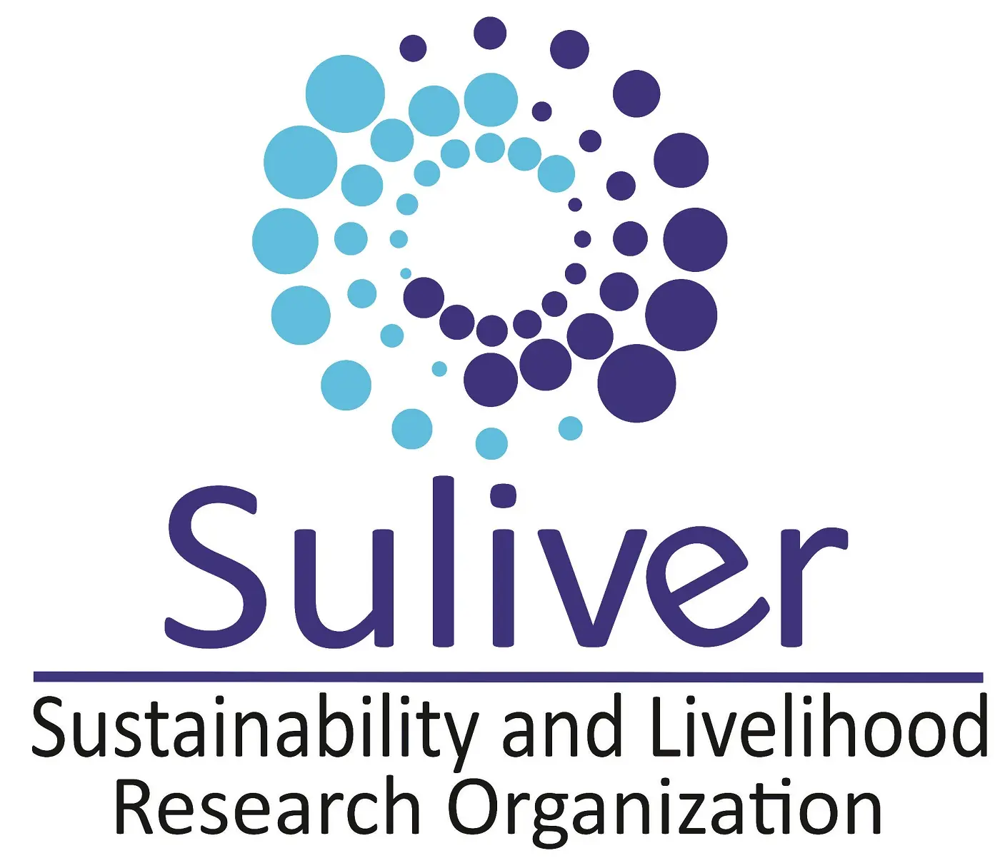
Economic and rural impact assessment of disasters on community livelihood and resilience (Community-based Disaster Risk Management).
Engagement of the private sector in sustainable forest management and Improved livelihoods.
Conducts research on rural development and post-crisis livelihood recovery process
Conducts research on environmental sustainability and livelihood issues such as climate adaptation, urban and rural resilience, environmental degradation, food security and economic inclusiveness.
Coordinates a network of researchers and thinkers across disciplines, from Global North and South to promote mutual learning and effective science-policy dialogue for improved social outcomes.
Facilitates the activities of different Working Groups (WG) in Suliver network during workshops, and social dialogue with different government entities.
Evaluates and admits new career researchers in Suliver.
Collaborates with scholars across disciplines in research activities on sustainable development and livelihood in different regions of the world.